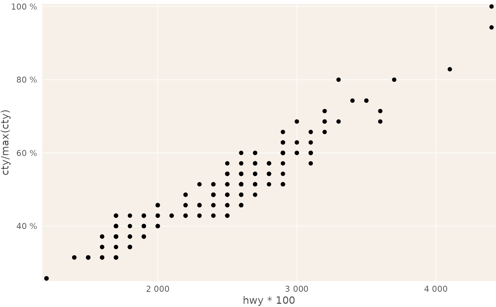

This is exactly the same function as scale_*_continuous, just with different
label defaults to save repetitively setting these parameters, except that
the parameters which you would normally find inside the scales::format_*()
functions are accessible directly in the scale_[xy]_*_cz() functions.
scale_x_percent_cz( name = waiver(), breaks = waiver(), minor_breaks = waiver(), guide = waiver(), n.breaks = NULL, labels, limits = NULL, expand = c(0.01, 0), oob = scales::censor, na.value = NA_real_, trans = "identity", position = "bottom", sec.axis = waiver(), accuracy = 1, scale = 100, prefix = "", suffix = " %", big.mark = " ", decimal.mark = ",", trim = TRUE, ... ) scale_y_percent_cz( name = waiver(), breaks = waiver(), minor_breaks = waiver(), guide = waiver(), n.breaks = NULL, labels, limits = NULL, expand = c(0.01, 0), oob = scales::censor, na.value = NA_real_, trans = "identity", position = "left", sec.axis = waiver(), accuracy = 1, scale = 100, prefix = "", suffix = " %", big.mark = " ", decimal.mark = ",", trim = TRUE, ... ) scale_x_number_cz( name = waiver(), breaks = waiver(), minor_breaks = waiver(), guide = waiver(), n.breaks = NULL, labels, limits = NULL, expand = c(0.01, 0), oob = scales::censor, na.value = NA_real_, trans = "identity", position = "bottom", sec.axis = waiver(), accuracy = 1, scale = 1, prefix = "", suffix = "", big.mark = " ", decimal.mark = ",", trim = TRUE, ... ) scale_y_number_cz( name = waiver(), breaks = waiver(), minor_breaks = waiver(), guide = waiver(), n.breaks = NULL, labels, limits = NULL, expand = c(0.01, 0), oob = scales::censor, na.value = NA_real_, trans = "identity", position = "left", sec.axis = waiver(), accuracy = 1, scale = 1, prefix = "", suffix = "", big.mark = " ", decimal.mark = ",", trim = TRUE, ... )
| name | The name of the scale. Used as axis or legend title. If
|
|---|---|
| breaks | One of:
|
| minor_breaks | One of:
|
| guide | guide A function used to create a guide or its name. See |
| n.breaks | An integer guiding the number of major breaks. The algorithm may choose a
slightly different number to ensure nice break labels. Will only have an effect if
|
| labels | Specifying overrides the default format (i.e. you really don't
want to do that). |
| limits | A numeric vector of length two providing limits of the scale.
Use |
| expand | same as in ggplot2 |
| oob | Function that handles limits outside of the scale limits (out of bounds). The default replaces out of bounds values with NA. |
| na.value | If |
| trans | Either the name of a transformation object, or the object itself. Built-in transformations include "asn", "atanh", "boxcox", "exp", "identity", "log", "log10", "log1p", "log2", "logit", "probability", "probit", "reciprocal", "reverse" and "sqrt". |
| position | The position of the axis. "left" or "right" for vertical scales, "top" or "bottom" for horizontal scales |
| sec.axis | specify a secondary axis |
| accuracy | See [scales::comma_format()] or [scales::percent_format()] |
| scale | See [scales::comma_format()] or [scales::percent_format()] |
| prefix | See [scales::comma_format()] or [scales::percent_format()] |
| suffix | See [scales::comma_format()] or [scales::percent_format()] |
| big.mark | See [scales::comma_format()] or [scales::percent_format()] |
| decimal.mark | See [scales::comma_format()] or [scales::percent_format()] |
| trim | See [scales::comma_format()] or [scales::percent_format()] |
| ... | passed on to [scales::comma_format()] or [scales::percent_format()] |
# ADD_EXAMPLES_HERE library(reschola) library(ggplot2) ggplot(mpg, aes(hwy * 100, cty/max(cty))) + geom_point() + theme_schola(family = "sans", title_family = "sans", gridlines = "scatter") + scale_y_percent_cz() + scale_x_number_cz()